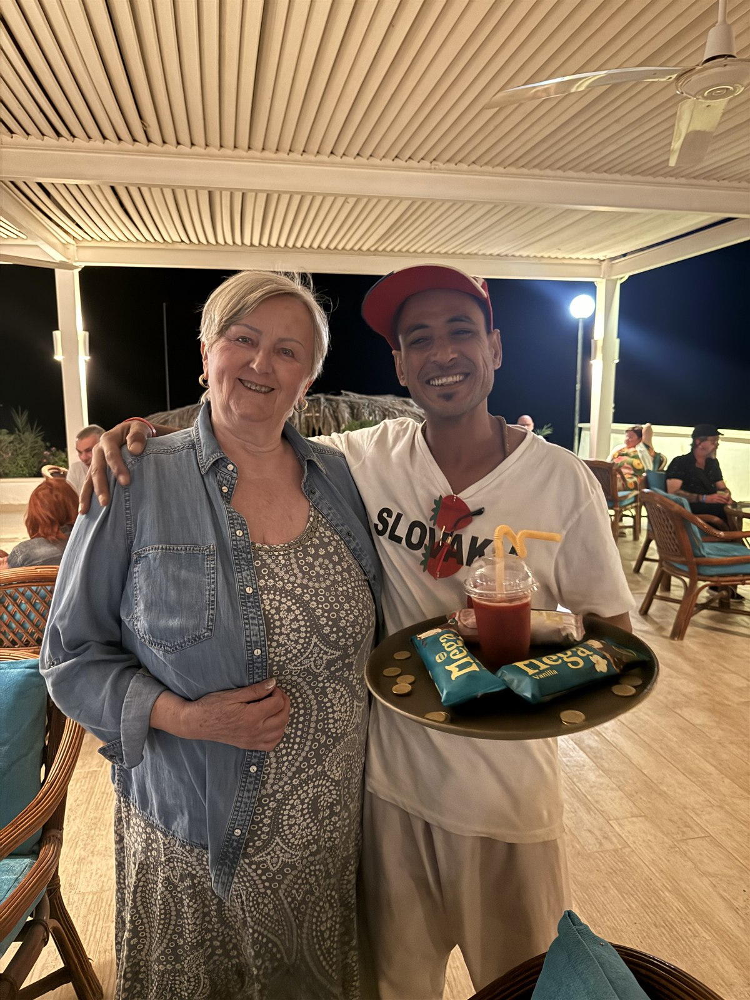
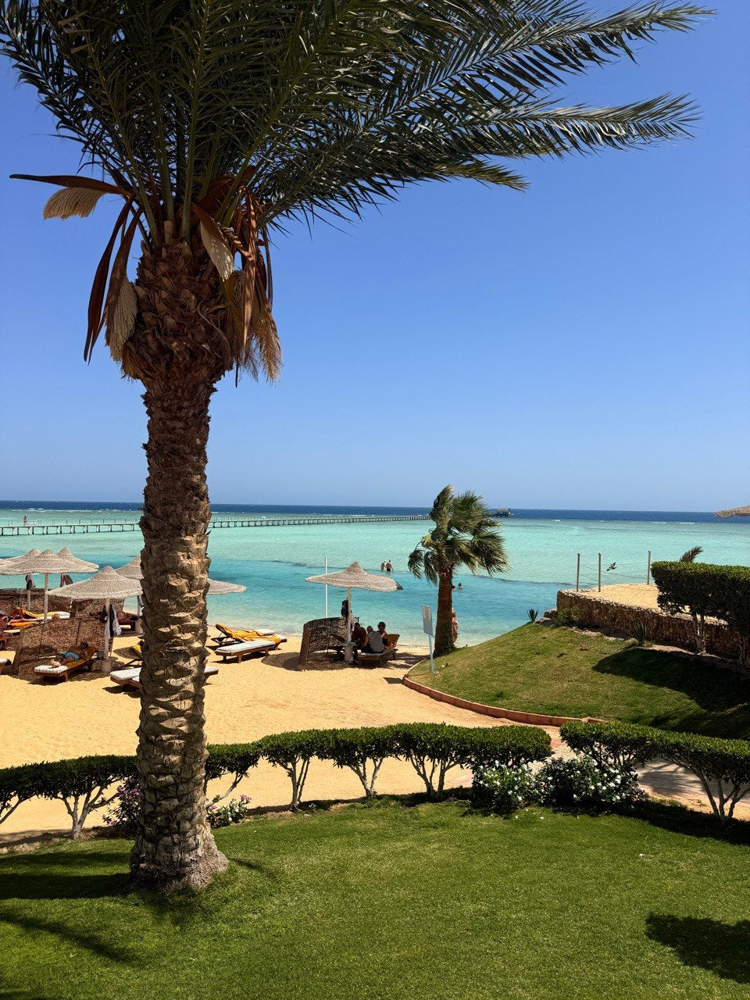
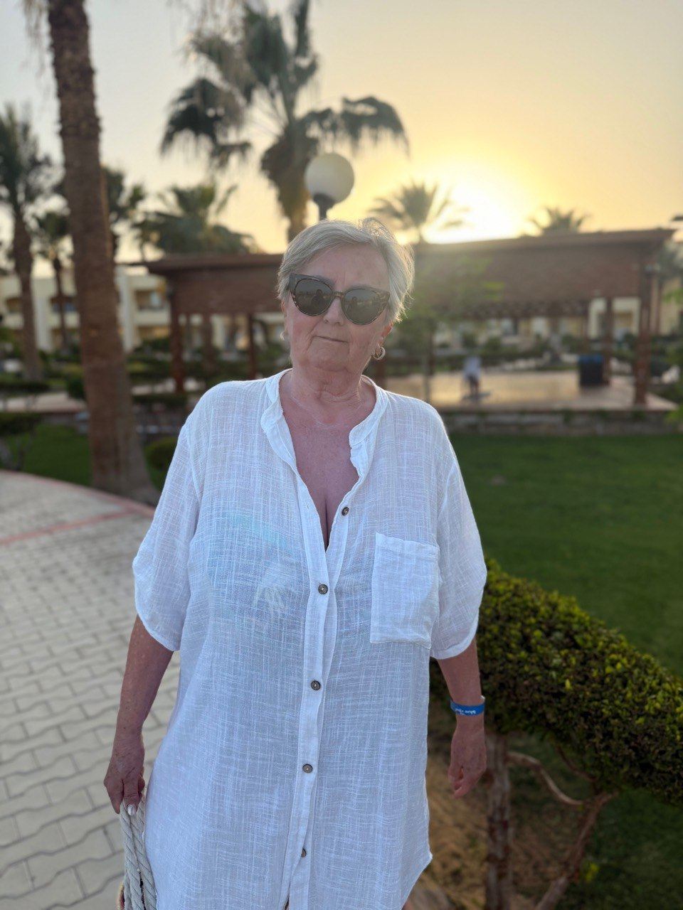
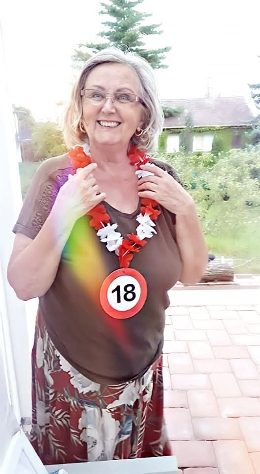
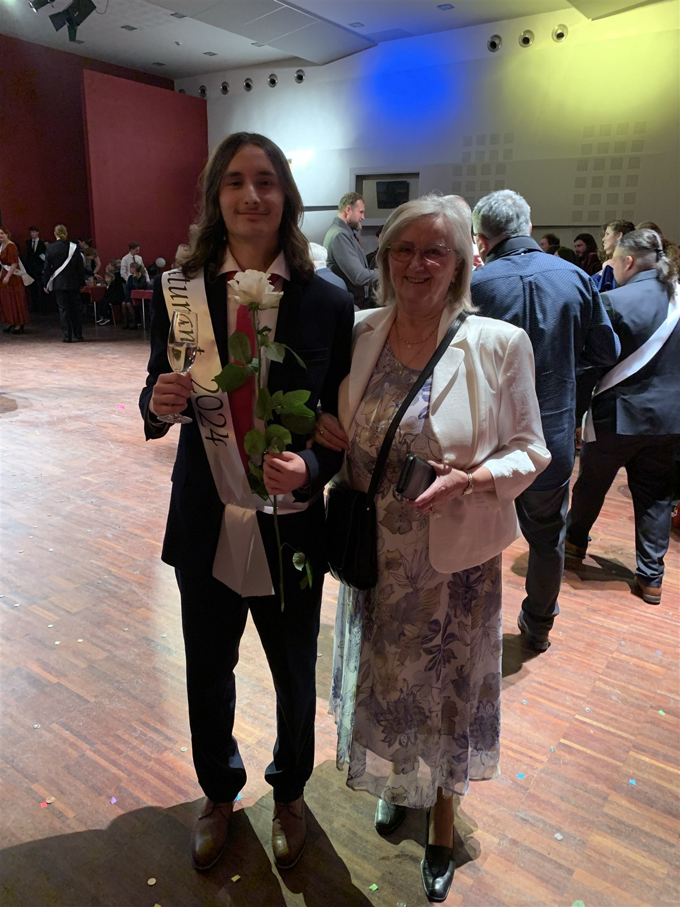
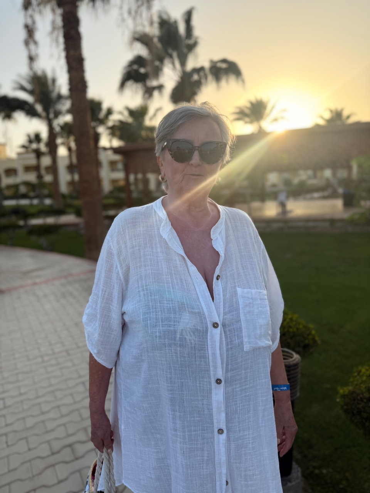
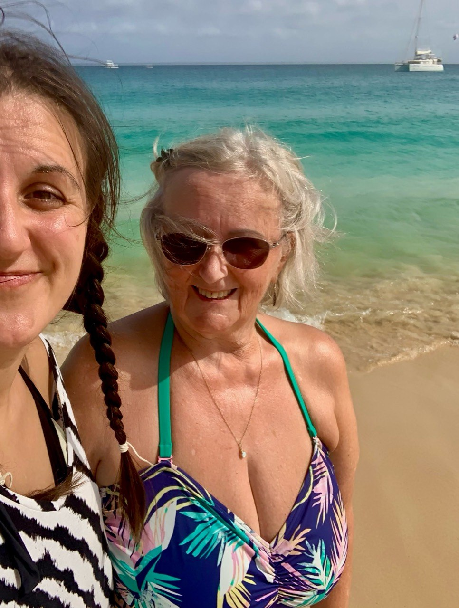

Rodinné vydání · 2026
75
Pro moji milovanou babičku
Tisk z iPhonu
V tomto prohlížeči nejde tisk otevřít automaticky. Klepni dole na ikonu čtverce se šipkou nahoru, posuň nabídku níže a vyber Tisknout.
Pro PDF rozevři náhled tisku dvěma prsty a potom znovu použij Sdílet.
Pro moji milovanou babičku
Vzpomínky, které si spojím s tebou
Malá sbírka chutí, her, cest a rodinných historek.
Milá babičko,
Když si vybavím dětství, spousta vzpomínek vede právě k tobě. Nejsou to jen velké události. Jsou to chutě, hry, pohádky, drobné rodinné historky i chvíle, kterým jsme se smály.
Tenhle časopis je moje malá sbírka toho, co ve mně zůstalo. Něco si pamatuju úplně přesně, něco už jen jako pocit. Ale všechny ty vzpomínky mají jedno společné: jsi v nich ty.
Tvoje Viktorie
„Stačí jedna chuť nebo věta — a na chvíli jsem zase tam.“
Za dveřmi tvého bytu
Když zavřu oči, nevybaví se mi adresa ani půdorys. Vybaví se mi pocit, že přicházím k tobě. Byt v Liberci byl pro mě celý malý svět: stůl připravený ke hře, kazety s pohádkami a já, která měla vždycky co objevovat.

Od každého něco
Pamatuju si, jak přede mnou přistál talíř a na něm rohlík nakrájený na malé části. Na jedné šunka, na další sýr, potom lososová pomazánka a někdy dokonce kaviár.
Vidím to před očima skoro dodnes. Těšila jsem se, co bude na dalším kousku, a připadala si, jako bych dostala hostinu sestavenou jen pro mě.
A podobně jsi mi připravovala i ovoce. Vždycky jsi ho oloupala, pečlivě nakrájela na měsíčky a krásně poskládala na talíř. Já už pak jen seděla a jedla jeden kousek za druhým. Možná to byly obyčejné svačiny, ale u tebe vypadaly jako něco výjimečného — protože sis vždycky dala práci, abys mi udělala radost.


Ještě jeden pokus
U tebe jsme nepotřebovaly žádný velký program. Stačil stůl a hra vytažená ze skříně. U Kloboučku, hop! létaly barevné kloboučky a u Logiku jedna z nás skryla pět barev, zatímco druhá zkoušela uhodnout jejich pořadí.
Vybavuju si to soustředění před každým pokusem
i radost, když se některá barva konečně trefila. Názvy možná časem zapomeneme. Ten pocit, že sedíme proti sobě a máme čas na další kolo, zůstává.
„Tak ještě jednou.“


Děda Uwe mi na videokazety nahrával Toma a Jerryho a já se na ně u vás dívala znovu a znovu. Stačilo pustit kazetu a pokoj se proměnil v moje malé kino.
A pak je tu obraz, který znám i díky tvému vyprávění: já, úplně malá, chodím po bytě s košíčkem plným kolíčků a při každém kroku se legračně houpu ze strany na stranu. Možná si tu chvíli sama nepamatuju celou, ale díky tobě ji vidím skoro jako scénu ze starého rodinného filmu.
Historka, která se musí vyprávět
Seděla jsem malá v nákupním košíku a mamka mi chtěla dát napít dětského pitíčka s brčkem. Jenže u toho povídala, nedívala se pořádně — a místo ke mně nasměrovala brčko k prababičce.
Prababička byla drobná, takže se na malý okamžik všechny generace dokonale popletly. Ty jsi u toho byla a dodnes tu scénu ráda vyprávíš. A právě proto žije dál: mamčina nepozornost, překvapená prababička, já v košíku a ty, která sis ten okamžik uchovala.


Dlouhé roky jsi pekla skvělé vánoční cukroví. Nejvíc jsem milovala slepované linecké s čokoládou a oříškem, pracny a samozřejmě rohlíčky. Každé mělo svoji chuť, ale dohromady pro mě znamenaly Vánoce u tebe.
Vím, že tě dnes ruce bolí a pečení už není tak snadné jako dřív. Možná právě proto pro mě tolik znamená, že jsi mě pracny naučila dělat. Když jsem ti asi před dvěma lety psala o recept, nebyl to jen seznam surovin. Byl to způsob, jak si kousek tvých Vánoc odnést do vlastní kuchyně.
Chuť, která zůstala
Tuhle vzpomínku si nespojuju s úplně raným dětstvím. Tvoje čína přišla do mého života později — a možná právě proto si ji pamatuju jako jídlo, na které jsem se těšila už skoro dospělá.
Kuřecí maso v tom tvém zvláštním těstíčku, k tomu rýže. Děláš ji občas i dnes, a tak to není chuť, která by patřila jen minulosti. Je to jedna z těch věcí, které stále dokážou na chvíli spojit tehdy a teď.

Přijet a přiložit ruku k dílu
Vzpomínám si, jak jsi jezdila k nám do Pulečného. V jednom z těch obyčejných rodinných obrazů sedíš a skládáš mamce ponožky. Je to jen drobný výjev, který mi zůstal v hlavě — ne velké gesto, prostě kousek tehdejšího života.
A mnohem později jsi mi pomohla s úklidem bytu, když jsem se stěhovala. Přijela jsi a přiložila ruku k dílu přesně ve chvíli, kdy to bylo potřeba.
Anglie v Řecku
Na dovolené v Řecku jsme našly peníze a ty jsi mi za ně koupila fotbalový dres Anglie. Myslím, že na něm byl Ronaldo — aspoň tak mi to utkvělo v hlavě.
Pro mě byl tehdy naprosto dokonalý. Nechtěla jsem ho skoro vůbec sundat a nosila ho s pocitem, že mám ten nejlepší suvenýr na světě. Dodnes si ho nespojuju ani tak s fotbalem jako s tebou a s radostí, kterou jsi mi tím udělala.
 Pozdrav z Řecka
Pozdrav z Řecka
Ponožková bitva
Jeden řecký večer vám číšníci nosili malé sladké alkoholické drinky — mně samozřejmě ne — a s tetou jste k tomu popíjely víno. Byla jsi už trochu připitá, nálada byla veselá a my jsme se smály.
Pak přišla moje špinavá ponožka a tvoje improvizovaná „ponožková bitva“. Ne že bys mi ubližovala — jen jsme se všichni smály tomu, co se právě děje.
A nakonec jsi oznámila, že jdeš spát. Lehla sis, hned ses zase posadila a pronesla: „Já si budu ještě číst.“ Nám bylo jasné, že čtení je jen elegantní způsob, jak si poradit s pokojem, který se po ulehnutí začal trochu točit.
Odlet za sluncem
Když jsme později cestovaly společně s mamkou, byly jsme už každá v jiné životní etapě než při mých dětských návštěvách. Přesto tam byl pořád ten známý pocit: jsme spolu a máme na sebe čas.
Vzpomínám na letiště, teplo, moře i obyčejné chvíle mezi tím. Na dovolené člověk na chvíli odloží každodennost — a právě tehdy si často nejlépe uvědomí, jak vzácné je, že některé zážitky může sdílet napříč generacemi.

Společně na cestě
Tajenky u moře
Na pláži jsme spolu luštily křížovky a sudoku. Kolem bylo moře, slunce a dovolenkový ruch, ale my jsme se mohly zabrat do jedné tajenky a chvíli řešit jen to, které slovo chybí.
Právě na takové chvíle vzpomínám nejraději. Ne protože se stalo něco velkého, ale protože nám bylo dobře v obyčejném společném tichu. A když jsme na něco přišly, radost byla skoro stejně velká, jako když jsme kdysi rozluštily správné pořadí barevných kolíčků.
Ještě jedno políčko…
Redakční profil



Jsi upravená a elegantní. Často se jen tiše usměješ, ale když tě něco opravdu rozesměje, umíš se zasmát i nahlas. Vždycky jsi v sobě měla pevnost — a já dnes možná víc než dřív vidím i tvoji laskavost, obětavost a starostlivost.
Obdivuju, kolik jsi toho v životě unesla a jak jsi dokázala zůstat silná. Ne všechno se musí v tomhle časopise vyslovit. Některé věci stačí vědět a vážit si jich.

Jedna chvíle na cestách
Upravená, elegantní a vždycky svá.
Několik okamžiků napříč roky
Pár veršů pro tebe
K tvým 75. narozeninám
Babi, neříkám ti to možná tak často, jak bych měla, ale mám tě ráda. Vážím si všeho, co jsi pro mě udělala — od dětských svačin a času stráveného u her až po chvíle, kdy jsi mi přijela pomoct už v mém dospělém životě.
Vím, že mě máš ráda. A i když se někdy na všem neshodneme, nic to nemění na tom, co pro mě znamenáš. Přeju ti zdraví, klid, lehkost a co nejvíc důvodů k tomu tvému úsměvu.
Mám tě moc ráda.
Viktorie

Pro Jarušku
k 75. narozeninám